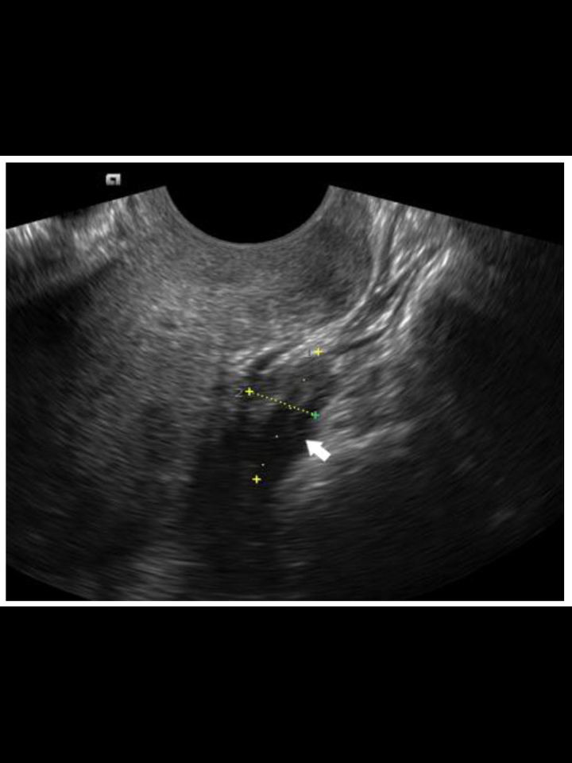

1. Uterus Midline
Place the probe centrally and tilt toward the pelvis.
The scan flow in the app moves through connect, scanning, and review, with view-by-view instructions and live quality checks.
Place the probe centrally and tilt toward the pelvis.
Rotate the probe 90 degrees from the midline position.
Slide toward the patient’s left side.
Slide toward the patient’s right side.
Angle posteriorly behind the uterus to complete the standard set.
Retry is available until quality passes the threshold for capture.

Represents the operator-facing scan surface.